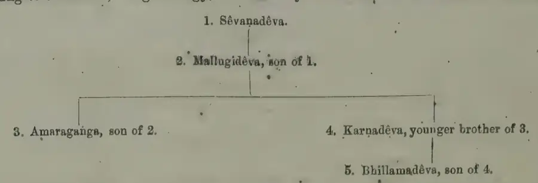

Gadag inscription of the Yâdava Bhillama ; Śaka-Saṁvat 1113
No. 30.— GADAG INSCRIPTION OF THE YADAVA BHILLAMA ;
SAKA-ŚAMVAT 1113.
BY F. KIELHORN, PH.D., C.I.E. ; GÖTTINGEN.
This inscription is on a stone at the temple of Trikûtêsvara (Śiva) at Gadag, the chief town of the Gadag tâlukâ in the Dhârwâr district of the Bombay Presidency. Its existence was indicated, twenty years ago, by Dr. Fleet in the Indian Antiquary, Vol. II. p. 298, and I now edit it from an excellent impression, supplied to me by the same scholar.
The inscription contains 21 lines of writing which covers a space of about 1' 7" broad by 1' 11" high. Excepting that in line 12 three aksharas have been intentionally effaced, lines 1-19 are in a fair state of preservation and may be read with confidence throughout; but the greater part of lines 20 and 21 is broken away, and so is the end of the inscription,— probably one or two more lines, of no particular importance. At the top of the stone are, in the centre, a linga and a priest; to the right, a cow and calf with the sun or moon above them; and to the left, a bull with the moon or sun above it.— The size of the letters is between and .— The characters are Nâgarî.— The language is Sanskrit. Speaking generally, lines 1-9 are in verse, and lines 10-20 in prose; and the inscription apparently ended with other (benedictive and imprecatory) verses.— The orthography calls for no remarks.
The inscription records a grant of land by the Yâdava king Bhillamadêva (of Dêvagiri). Opening with a verse which invokes the protection of 'Kamsa's foe' (Vishnu), it gives in seven verses the following genealogy of the donor:— In Yadu's family there was a king named Sêvanadêva. His son was the prince Mallugidêva. His son, again, was the prince Amaraganga. After him his younger brother Karnadêva became king. And his son was the king Bhillamadêva, an incarnation as it were of Krishna, who, conquering many countries and acquiring much wealth, rendered the rule of the family of king Sêvana (or of the Sêvana kings) highly prosperous.— After this, the inscription in another verse (in line 9) states that Bhillamadêva had a minister, named Jaitasimha, who was endowed with the three constituent elements1 of regal power, whose prowess was surpassing thought, and who was a very scorpious rulers of districts.
Lines 10-19 then record that, at the representation of this Jaitasimha, His Majesty Bhillamadêva, adorned with such titles as 'the refuge of the whole world, the illustrious favourite of the earth, Mahârâjâdhirâja, Paramêsvara, Paramabhatṭâraka, the ornament of Yadu's family, born in the holy Vishnu's lineage,' while his camp of victory was located at Hêrûrâ,— at a solar eclipse on Sunday, the new-moon tithi of Jyaishtha of the Virôdhakrit year, when 1113 years had elapsed of the era of the Śaka king,— after having washed the feet of the holy chief of ascetics Siddhântichandrabhûshanapanditadêva, also called Satyavâkya, the disciple of Vidyâbharanadêva who in turn was a disciple of Sômêsvaradêva, and superintendent (or chief priest) of the shrine of the god Svayambhû-Trikûtêsvara at Kratuka, granted the village of Hiriya-Handigôla in the Belûvola Three-hundred, free from tolls, taxes and molestation, with every kind of income, with its boundaries as they were known before, not to be pointed at with the finger by the king's officials, and together with the tribhôga,2 making it a sarva-namasya grant and dividing it into two parts, one of which, according to line 19, was destined for the god Trikûtêsvara.— From here the text becomes mutilated or is entirely broken away; and what remains of lines 20 and 21, only shows that the
1 viz. prabhutva, mantra, and utshâ.
2 See Ind. Ant. Vol. XIX. p. 271; I do not feel sure that the explanation, there given of tribhôga, is correct, but am unable to explain the term myself.
inscription ended with an appeal to future rulers to respect this grant, and with one or more of the customary benedictive and imprecatory verses.
According to the above, the genealogy, furnished by this record of Bhillama,1 is this:—

Of these princes or kings, Sêvanadêva clearly is the Sêuna or Sêunachandra of whom we possess two inscriptions of Śaka-Samvat 991;2 and Amaraganga is the Amaragangêya who in Hêmâdri's Vratakhanda3 also is stated to have been born from Mallugi, while in the Harałahałli copper-plates4 of Singhana II. of Śaka-Samvat 1160 his name is given before that of Mallugi, his exact relationship to this prince being left undefined. Quite new to us are the name of Karnadêva and the statement that he was Bhillama's father. The Paithan copper-plates5 of Râmachandra of Śaka-Samvat 1193 only record in a general way that Bhillama came after Mallugi; but the Harałahałli plates distinctly assert that Bhillama was born from Mallugi, and this, too, is the conclusion which Professor Bhandarkar has drawn from the account of the Yâdava family given by Hêmâdri.—To reconcile these different statements is impossible, and, obliged to choose between them, I would unhesitatingly adopt the account given by. the present inscription, because I do not believe that its author could have made a mistake about the name of the father of the sovereign whose grant he was recording.
The name of the minister at whose representation this grant was made, according to our text, was Jaitasimha. He of course is the Jaitrasimha who, in line 30 of the Gadag inscription6 of the Hoysała Vîra-Ballâla of Śaka-Samvat 1114, is described as the right arm of Bhillama, and whose defeat by Vîra-Ballâla is spoken of in that inscription. With great probability it has been suggested that this Jaitasimha or Jaitrasimha must be identical with Bhillama's son and successor, Jaitugi or Jaitrapâla; but it is somewhat strange that our inscription should be silent about the close relationship of both.
The prose part of this inscription has much in common with the corresponding portion of the inscription of Vîra-Ballâla which has just been mentioned. It records a grant made in favour of the same temple, and mentions the same ascetic as the personage whose feet are supposed to have been washed by the donor. The date of our inscription corresponds, for Śaka-Samvat 1113 expired which was the Virôdhakrit year, to Sunday, the 23rd June, A. D. 1191, when there was a solar eclipse which was visible in India, 10 h. 29 m. after mean sunrise; and the date of Vîra-Ballâla's inscription is Saturday, the 21st November, A.D. 1192. Between these two dates, therefore, Jaitasimha must have been defeated by Vîra-Ballâla, and must the country about Gadag have passed from the possession of Bhillama into that of the Hoysała prince, a circumstance which undoubtedly caused somebody to efface Bhillama's name in line 12 of this record.
1 Compare Dr. Fleet's Dynasties of the Kanarese Districts, p. 72, and Dr. Bhandarkar's Early History of the Dekkan, p. 81.
2 See Ep. Ind. Vol. II. p. 224.
3 See Dr. Bhandarkar, l.c. p. 112, v. 35.
4 See Jour. Bo. As. Soc. Vol. XV. p. 386.
5 See Ind. Ant. Vol. XIV. p. 315.
6 See ib. Vol. II. p. 300.
Of the localities mentioned in this inscription, Kratuka is Gadag itself, and Hiriya-Handigôla probably is the village of 'Hundeegol,' about six miles west by north of Gadag; the place Hêrûrâ mentioned in line 12 I am unable to identify.
TEXT.1
1 [Ôm] | Ôm svasti || Avatu2 sa vah Kainsârih kumuña-ruchir=bhâti
yat-karê śamkhah | kshirâbdhi-mathana-sam̂bhrama-sam̂krântah
2 phêna-puñja iva || [1 ||*] Asti3 kshattriya-simhasya Yadu-nâmnah
kulam̂ bhuvi | lilâ-krît-âvatârêna Harinâ
3 yad-alam̂krîtam || [2 ||*] Tatra Sêvañadêv-âkhyah prathitah prithivî-
patih | âsîd=asêsha-bhûpâla-mauli-lâlita-śâ-
4 sanah || [3 ||*] Tasya Mallugidêv-âkhyô babhûva nripatih sutah | yasya
na pratimallô çbhûn=nripêshu kshiti-mañđalê || [4 ||*] Tasy=â-
5 py=Amaragañg-âkhyas=tanayô çbhûn=mahîpatih | pratâpa-pâvaka-plushta-
pratyarthi-nripa-kânanah || [5 ||*] Tatas=tad-anujah.
6 śrîmân=Karññadêvô nripô çbhavat | śaradîndu-prabhâ-subhra-yasô-
dhavalit-âkhilah || [6 ||*] Tasya cha ||
7 Jâtô Vrîndâvana-krîđâ-kautukî śamkha-lâm̂chchha(chha)nah | râjâ
Bhillamadêv-âkhyah sutah Krî-
8 shna iv=âparah || [7 ||*] Âkramya vividhân=dêśân=arjayitvâ dhanam̂ bahu |
yêna Sêvaña-bhûpâla-
9 kula-râjyam̂ vivarddhitam || [8 ||*] Tasy=âsti Jaitasîmh-âkhyah śakti-
traya-samanvitah | atarkya-vikramô mam̂-
10 trî mañđalêsvara-vrîschikah || [9 ||*] Tasya vijñâpanêna ||4 têna cha
samastabhuvanâśraya-śrîprithvîvallabha-mahârâ-
11 jâdhirâja-paramêsvara-paramabhattâraka-Yadukulatilaka-śrîVishnuvamśôdbh a v - ê t y â d i-
samâsta-nâmâ-
12 valî-virâjamânêna śrîmat-pratâpachakrayarttin[â] 5 dêvêna
Hêrûrâ-samâvâsita-vijayaskamdhâ-
13 vârêna Śakanripakâl-âtîta-samvatsara-śatêshu trayôdaś-âdhikêshv=êkâdaśasu
varttamâna-Virôdhakrît-samvatsa-
14 r-âintargata-Jyêshth-âmâvâsyâyâm=Âditya-vârê sûrya-grahanê śrîmat-
Kratuka-Svayam̂bhû-Trikûtêsvaradêva-sthânâchâ-
15 ryasya Sômêsvaradêva-śishya-Vidyâbharanadêva-śishyasya Satyavâky-âpara-
nâmadhêyasya śrîmat-parama-
16 tâpasâchârya-Siddhântichamdrabhûshañapamñđitadêvasya pâda-prakshâlanam̂
krîtvâ Beluvolatriśat-âintargata-
17 Hiriya-Handigôla-nâma-grâmah sa-šulka-kara-bâdhâ-parihârah samast-âdêya-
sahitah pûrva-prasiddha-
18 sîmâ-samanvitô râjakîyânâm=anañguliprêkshañiyas=tribhôga-yuktah sarva-
namasyîkritya dvêdhâ
19 vîbhajya dhârâ-pûrvakam̂ sa-śâsanô dattah || Tatr=aikô bhâgas=
tasy=ajva bhagavatas=Trikûtêsvaradêvasy=â-
1 From an impression, supplied to me by Dr. Fleet.
2 Metre: Âryâ. 3 Metre of verses 2-9: Slâka (Anushṭubh).
4 This sign of punctuation is superfluous.
5 Here about three aksharas are intentionally effaced; but these aksharas must have been Bhillama, and I believe that the traces which remain of them, fully justify this reading.
20 1 dharmas=tad-vainšyair=anyaiś=cha
bhūmipálaih pálaníyah || Uktain cha pálanê
21 2 [râ*]ja-
bhih Sagar-ádibhih | yasya yasya [yádá]
1 At the commencement of this line, about twelve aksharas are almost entirely broken away.
2 More than half of this line is broken away.